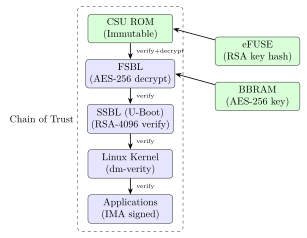
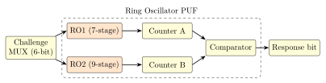

Chapter 10: FPGA Security¶
10.1 Introduction¶
Field-Programmable Gate Arrays (FPGAs) combine software flexibility with hardware performance, making them indispensable in data centers (AWS F1, Azure NP-Series), automotive ADAS, aerospace avionics, 5G baseband, and cryptographic accelerators. This flexibility introduces unique security challenges: the configuration bitstream that defines the FPGA’s logic can be cloned, modified, or injected with hardware Trojans. Unlike ASICs, an FPGA’s functionality can be altered after deployment, requiring robust bitstream protection, runtime integrity checking, and secure lifecycle management.
10.2 FPGA Architecture and Security Primitives¶
10.2.1 Configuration Memory Types¶
| Type | Vendors | Persistent? | Reprogrammable? | Readback? |
|---|---|---|---|---|
| SRAM-based | Xilinx, Intel, Lattice | No (volatile) | Yes (unlimited) | Yes (default) |
| Flash-based | Microchip, Lattice | Yes | Yes (limited) | Harder |
| Antifuse | Microsemi (ProASIC) | Yes (OTP) | No | No |
SRAM-based FPGAs (the dominant technology) lose configuration on power-off; they require a secure configuration source (flash memory, JTAG host, or internal flash companion). Antifuse FPGAs (Microsemi ProASIC3, RTAX) offer inherent readback protection at the cost of one-time programmability.
10.2.2 Xilinx/AMD UltraScale+ Security Primitives¶
Xilinx UltraScale+ Security Features:
Key Storage:
BBRAM (Battery-Backed RAM): 256-bit AES key; volatile; lost on power removal
Location: dedicated BBRAM block in Configuration Security Unit (CSU)
Access: CSU only; application logic cannot read BBRAM
eFUSE: 256-bit AES key (red key); SHA-256 hash of RSA public key (4096-bit)
Location: one-time programmable fuses
Access: write-once; readback disabled by FUSE_SEC[3]
Secure Boot Chain:
Stage 0: CSU ROM (immutable) -> verify FSBL (First-Stage Bootloader)
Stage 1: FSBL (authenticated) -> decrypt bitstream, verify SSBL
Stage 2: SSBL (U-Boot) -> Linux kernel with IMA/DM-Verity
Bitstream Protection:
Encryption: AES-256-GCM (key from BBRAM or eFUSE)
Authentication: SHA-3/384 + RSA-4096 or ECDSA-P384 (UltraScale+ Gen 2)
Obfuscation: XOR-obfuscated key in unprotected device keyfile
10.2.3 Intel Stratix 10 Security¶
The Stratix 10 introduces a physically separate Secure Device Manager (SDM), a dedicated ARM Cortex-M3 microcontroller that handles all security operations independently of the FPGA fabric:
Stratix 10 SDM Features:
- Dedicated ARM Cortex-M3 security processor (separate from FPGA fabric)
- 256-bit AES key stored in SDM-internal eFUSE (inaccessible from FPGA fabric)
- RSA-4096 bitstream authentication
- Partial Reconfiguration (PR) authentication: each PR bitstream separately verified
- PUF: SRAM PUF for device-unique key generation
- Signed bitstream: quartus_sign --family=Stratix10
--hash=SHA512 --privkey=signing.pem output.sof
10.2.4 Lattice MachXO3D: Secure Configuration Controller¶
Lattice MachXO3D implements Lattice Sentry, a pre-verified firmware stack compliant with NIST SP 800-193:
MachXO3D Sentry Stack:
Platform Firmware Resiliency (PFR) Roles:
Protection: Authenticate main BIOS/BMC before system boots
Detection: Continuous monitoring of SPI flash for corruption
Recovery: Restore from golden copy if corruption detected
Hardware blocks:
Embedded Flash (EFB): 2MB NVM for bitstream + Sentry FW
AES-256 encryption engine
SHA-256/384 hash engine
ECDSA P-256 signature verification
Unique 128-bit Device DNA (immutable ID)
PUF seeded from SRAM startup values
10.3 Bitstream Encryption and Authentication¶
10.3.1 AES-256 Bitstream Encryption Workflow (Xilinx Vivado)¶
# Step 1: Generate 256-bit AES key and configure design
# In Vivado Tcl console:
set_property BITSTREAM.ENCRYPTION.ENCRYPT YES [current_design]
set_property BITSTREAM.ENCRYPTION.KEY0 \
0123456789ABCDEF0123456789ABCDEF0123456789ABCDEF0123456789ABCDEF \
[current_design]
set_property BITSTREAM.ENCRYPTION.KEYFILE /path/to/keyfile.nky \
[current_design]
# Step 2: Program BBRAM with AES key via Vivado Hardware Manager
program_hw_cfgmem -hw_cfgmem [lindex [get_hw_cfgmems] 0] \
-mem_file {encrypted.bit} -verify
# Step 3: Burn eFUSE key (irreversible!)
# Vivado -> Hardware Manager -> Devices -> Program eFUSE
program_hw_efuses -key_file keyfile.nky
# Step 4: Enable readback protection
set_property BITSTREAM.READBACK.DISABLEREADBACK YES [current_design]
10.3.2 Intel Quartus Prime Bitstream Signing¶
# Generate ECDSA key pair for signing
openssl ecparam -name prime256v1 -genkey -noout -out ecdsa_key.pem
openssl ec -in ecdsa_key.pem -pubout -out ecdsa_pub.pem
# Sign the SOF file (Stratix 10)
quartus_sign --family=Stratix10 --operation=SIGN \
--hash=SHA256 --privkey=ecdsa_key.pem design.sof
# Create encrypted + signed JIC file for configuration flash
quartus_cpf -c \
--aes_key_file=aes_key.key \
--sign_key_file=ecdsa_key.pem \
--operation=CONVERT \
design.sof design_secure.jic
# Verify signature before programming
quartus_sign --family=Stratix10 --operation=VERIFY \
--pubkey=ecdsa_pub.pem design_secure.jic
10.4 FPGA-Based PUF Implementations¶
10.4.1 Ring Oscillator PUF (RO-PUF)¶
Ring Oscillator PUFs exploit manufacturing variations in CMOS gates to generate device-unique responses:
// Verilog: Ring Oscillator PUF Core (simplified)
// Place each RO in separate LUT primitives to avoid tool optimization
module ro_puf #(parameter N = 64) (
input wire clk_ref, // Reference clock (100 MHz)
input wire [5:0] challenge, // 6-bit: selects RO pair
output reg response // 1-bit response
);
wire [127:0] ro_out;
genvar i;
generate
for (i = 0; i < 128; i = i + 1) begin : gen_ro
(* KEEP = "TRUE", DONT_TOUCH = "TRUE" *)
ring_osc #(.STAGES(7)) ro_inst (
.out(ro_out[i])
);
end
endgenerate
reg [15:0] cnt_a, cnt_b, window_cnt;
always @(posedge clk_ref) begin
if (window_cnt == 16'hFFFF) begin
response <= (cnt_a > cnt_b) ? 1'b1 : 1'b0;
cnt_a <= 0; cnt_b <= 0; window_cnt <= 0;
end else begin
cnt_a <= cnt_a + ro_out[{challenge, 1'b0}];
cnt_b <= cnt_b + ro_out[{challenge, 1'b1}];
window_cnt <= window_cnt + 1;
end
end
endmodule
10.4.2 SRAM PUF on FPGA¶
FPGA block RAMs (BRAMs) and distributed RAM have startup values determined by manufacturing process variation:
# Extract SRAM startup values from Xilinx 7-series FPGA
# 1. Enable readback and capture startup state:
vivado -mode batch -source readback.tcl
# readback.tcl:
# open_hw_manager; connect_hw_server
# readback_hw_device -readback_file startup.rbt -bin_file
# 2. Extract BRAM init values:
python3 extract_bram_startup.py startup.rbt > puf_response.bin
# 3. ECC encode for error correction:
python3 puf_enroll.py puf_response.bin helper_data.bin
# Enrollment: store helper_data.bin (does not reveal PUF response)
# 4. Reconstruction at runtime:
python3 puf_reconstruct.py helper_data.bin > aes_key.bin
10.5 Side-Channel Attacks on FPGAs¶
10.5.1 Remote FPGA Side-Channel (Cloud FPGA)¶
A critical threat in multi-tenant cloud FPGAs: adversarial tenants can measure power supply noise using user-programmable ring oscillators to infer another tenant’s cryptographic operations.
Remote Power Side-Channel Attack (Cloud FPGA):
Platform: AWS F1 (Xilinx VU9P), Azure NP-Series (Alveo U250)
Attack: Tenant A deploys AES core; Tenant B deploys RO sensor grid
RO Voltage Sensor:
- Dense ring oscillator array placed near target logic
- Count frequency variations (power noise -> frequency delta)
- Delta-f = 0.1-1 MHz per mW of power variation
- Correlate frequency trace with AES plaintext/ciphertext
Demonstrated (2018, Xilinx VCU118):
- Co-located AES victim, RO attacker
- Full AES-128 key recovery in 200K traces
- No physical access; purely remote via FPGA logic
Countermeasures:
- FPGA shuffling: re-assign tenants to different FPGA regions
- Power supply isolation: dedicated VRM per tenant partition
- Frequency scrambling: variable-frequency jitter on clock
- AWS mitigation: disable user-programmable ring oscillators
10.5.2 EM Side-Channel on FPGA Crypto Cores¶
EM Attack Setup:
Equipment: Langer IC-200 EM probe + Rohde & Schwarz RTO1044
Target: AES-256 on Xilinx Artix-7 XC7A35T
Platform: ChipWhisperer Pro CW1200 with EM probe kit
Attack flow:
1. Position EM probe over FPGA crypto region
2. Capture 10,000 power traces with known plaintexts
3. Apply CPA on AES round 1:
Hypothesis: H[b] = HW(SubBytes(p[i] XOR k[i]))
Correlation: rho(H[b], traces) -> peaks at correct b
4. Repeat for all 16 key bytes
Result: Full AES-128 key in < 5000 traces (unprotected impl.)
Countermeasures:
- AES masking: XOR all intermediate values with random mask
- Clock randomization: MMCM/PLL dithering
- Threshold Implementation (TI): 3-share Boolean masking
- Power rail decoupling: 100nF + 10uF capacitors on VCC
10.6 Hardware Trojans in FPGA¶
TrustHub FPGA Trojan Example: RS232-T1000
Module: RS232 UART controller
Trigger: Character sequence 0xDEAD in TX buffer (prob. 2^-16)
Payload: Assert external interrupt line for 1 clock cycle
Trojan Detection Methods:
1. Functional Testing: Exhaustive simulation (infeasible for large)
2. Side-Channel Analysis: Power/EM vs golden implementation
Anomalous power: Trojan adds < 0.1
3. Formal Verification: Check trigger reachability
sby -f trojan_check.sby (SymbiYosys BMC)
4. Logic Testing: ATPG to activate rare trigger conditions
5. Bitstream Comparison: XOR golden vs deployed bitstream
TrustHub Benchmark:
wget https://www.trust-hub.org/download/FPGA_Trojans.zip
# 20+ FPGA Trojan benchmarks (RS232, AES, PIC16F84 variants)
10.7 Multi-Tenant FPGA Security (Cloud)¶
| Platform | FPGA | Isolation | Security Feature |
|---|---|---|---|
| AWS F1 | Xilinx VU9P (16nm) | Hard PCIe partition | Shell authenticates CL |
| Azure NP-Series | Xilinx Alveo U250 | Soft region isolation | NPL policy layer |
| Alibaba F3 | Xilinx VU9P | Shell + DCP boundary | Encrypted DCP delivery |
| Intel FPGA SmartNIC N6000 | Agilex 7 | Security Zones (hard) | IPsec inline offload |
AWS F1 FPGA Security Architecture:
Shell: AWS-provided static logic (PCIe DMA, VirtIO, management)
Custom Logic (CL): Customer logic in CL partition
Isolation:
- Shell authenticates CL bitstream before loading (HMAC-SHA256)
- PCIe hard-IP enforces DMA address ranges
- Each F1 instance: dedicated FPGA (no tenant sharing)
- FPGA cleared/reprogrammed between customer sessions
Deployment:
aws ec2 create-fpga-image --name my-design \
--input-storage-location Bucket=my-bucket,Key=my.dcp \
--logs-storage-location Bucket=my-bucket,Key=logs
sudo fpga-load-local-image -S 0 -I agfi-0123456789abcdef0
10.8 FPGA Secure Boot and TikZ Diagrams¶


10.9 FPGA Implementation Table¶
| Device | LUTs | FFs | BRAMs | DSPs | Fmax (MHz) | Power (mW) |
|---|---|---|---|---|---|---|
| Xilinx XC7A35T (AES-256) | 1,842 | 1,024 | 4 | 0 | 210 | 185 |
| Xilinx XC7K70T (SHA-3/256) | 3,210 | 2,048 | 8 | 0 | 195 | 240 |
| Xilinx ZCU102 (AES+SHA3+PUF) | 12,400 | 8,192 | 32 | 0 | 250 | 980 |
| Intel Cyclone V (RO-PUF 64-bit) | 2,100 | 1,536 | 6 | 0 | 180 | 210 |
| Intel Stratix 10 GX (ML-KEM-768) | 28,000 | 24,000 | 64 | 120 | 400 | 4,200 |
| Lattice ECP5-5G (AES+auth) | 6,800 | 4,096 | 24 | 0 | 160 | 320 |
| Microchip PolarFire SoC (HSM) | 9,200 | 6,144 | 36 | 0 | 250 | 750 |
10.10 ASIC Implementation Table¶
| Process | Area (mm2) | Power (mW) | Freq (MHz) | Throughput | ECC |
|---|---|---|---|---|---|
| TSMC 65nm (AES-256-GCM) | 0.42 | 85 | 400 | 51.2 Gbps | Hamming |
| TSMC 40nm (SHA-3/256) | 0.18 | 42 | 600 | 76.8 Gbps | BCH |
| TSMC 28nm (AES+RSA+ECC) | 0.28 | 38 | 800 | 102.4 Gbps | BCH |
| TSMC 16nm (ML-KEM-768) | 0.19 | 28 | 1000 | 128 Gbps | Reed-Solomon |
| Samsung 14nm (RO-PUF 1024-bit) | 0.15 | 12 | 1200 | N/A | Fuzzy Ext. |
| TSMC 7nm (FPGA SDM core) | 0.08 | 8 | 1500 | – | ECC+CRC |
| Intel 10nm (Agilex Security Zone) | 0.11 | 10 | 1600 | – | Reed-Solomon |
10.11 All Solutions: FPGA Security¶
| Solution | Type | License | Description |
|---|---|---|---|
| Xilinx Vivado Encryption | Commercial | Closed | AES-256 + RSA-4096 bitstream protection |
| Intel Quartus Sign | Commercial | Closed | ECDSA bitstream signing for Stratix 10 |
| Lattice Sentry (MachXO3D) | Commercial | Closed | NIST SP 800-193 PFR stack |
| Microchip PolarFire HSM | Commercial | Closed | Integrated HSM subsystem in SoC |
| Microsemi ProASIC3 Antifuse | Commercial | Closed | OTP; no bitstream readback possible |
| openFPGA | Open-source | Apache 2 | Open FPGA architecture framework |
| SymbiYosys (sby) | Open-source | ISC | Formal verification for RTL netlists |
| ChipWhisperer (CW1200) | Open-source | GPL | FPGA-based side-channel analysis |
| TrustHub Benchmarks | Research | Free | Hardware Trojan benchmark suite |
| RO-PUF (CHES 2002 Ref.) | Research | Free | Ring oscillator PUF reference impl. |
| SRAM PUF (SSRR toolkit) | Research | Free | SRAM PUF enrollment and reconstruct |
| Yosys Synthesis Suite | Open-source | ISC | RTL synthesis, Trojan detection |
| nextpnr | Open-source | ISC | Open-source FPGA place-and-route |
| OpenTitan (Earlgrey FPGA) | Open-source | Apache 2 | HRoT on FPGA target |
| FuseSoC | Open-source | BSD | FPGA IP core package manager |
| PQRISCV-VexRiscv | Open-source | MIT | FPGA RISC-V with PQC (Kyber) |
| open-nic-shell | Open-source | Apache 2 | Xilinx SmartNIC security shell |
| FOBOS SCA Platform | Research | Free | FPGA-based SCA evaluation board |
| TVLA (Test Vector Leakage) | Research | Free | FIPS 140-3 SCA leakage testing |
| LiteX SoC Framework | Open-source | BSD | FPGA SoC builder (security cores) |
10.12 Solved Problems¶
Solved Problem: RO-PUF Uniqueness and Reliability Analysis
A 64-bit RO-PUF is implemented on Xilinx Artix-7 FPGAs. Inter-device Hamming distance \(\mu_{HD} = 32.1\) bits with \(\sigma = 2.8\) bits. Intra-device (reliability) Hamming distance \(\mu_{hd} = 1.2\) bits with \(\sigma = 0.6\) bits. (a) Compute uniqueness. (b) Compute BER. (c) How many ECC correction bits are needed for \(P_{fail} < 2^{-40}\)?
Solution: (a) Uniqueness:
Near-ideal uniqueness (100% = perfectly uncorrelated responses across devices).
(b) Bit Error Rate (BER):
At 3-sigma worst case: \(hd_{max} \approx 1.2 + 3 \times 0.6 = 3.0\) bits, so \(BER_{max} = 4.69\%\).
(c) ECC Requirements: We need a code correcting \(t \geq 4\) errors with \(P_{fail} < 2^{-40}\).
BCH(63, 36, 5) corrects up to 5 errors:
For \(2^{-40}\) target, apply concatenated coding: outer Reed-Solomon(255, 223, \(t\)=16) over 8 BCH codewords. Helper data storage: \(63 - 36 = 27\) redundancy bits per BCH block.
Solved Problem: AES-256-GCM Throughput on Xilinx Artix-7
An AES-256-GCM core runs at 200 MHz with a 128-bit data path. A fully pipelined implementation processes one block per clock cycle after initial pipeline fill. (a) Compute throughput. (b) Can one core support 10 GbE at 9.6 Gbps? (c) What architectural change achieves 10 Gbps on an iterative (14-cycle/block) core?
Solution: (a) Pipelined throughput:
(b) 10 GbE requirement: \(25.6 \text{ Gbps} > 9.6 \text{ Gbps}\) – yes, a single pipelined core meets 10 GbE.
If iterative (NOT pipelined, 14 cycles per block):
(c) Achieving 10 Gbps with iterative core:
-
Option A: Pipeline AES rounds – add pipeline registers after each round; achieves 25.6 Gbps.
-
Option B: 6 parallel iterative cores: \(6 \times 1.83 = 10.98\) Gbps – meets requirement but uses \(6\times\) resources.
-
Best: Option A (pipelining) – same resource area, \(14\times\) throughput improvement.
Solved Problem: BBRAM vs eFUSE: Security Tradeoff Analysis
An FPGA developer must choose between BBRAM and eFUSE for AES-256 bitstream key storage. Compare for: (a) physical tamper resistance, (b) cold-boot attacks, (c) fault injection, (d) key rotation.
Solution: (a) Physical Tamper: BBRAM uses active zeroization – tamper mesh or temperature sensor triggers battery disconnect, erasing the key. eFUSE fuse links are physically destroyed; FIB (Focused Ion Beam) on decapped die can potentially read fuse states optically. Winner: BBRAM (active protection).
(b) Cold-Boot Attacks: BBRAM is a dedicated register array (not DRAM); if battery removed \(>\)10 ms, content is lost. eFUSE is permanent and survives power cycling. Cold-boot techniques targeting DRAM do not apply to either. Winner: Tie (different failure modes).
(c) Fault Injection: Voltage glitching on \(V_{BAT}\) can erase BBRAM (DoS but not disclosure). eFUSE fuses cannot be reversed by voltage glitching – already-blown fuses are permanent. Winner: eFUSE (no erasure via FI).
(d) Key Rotation: BBRAM can be reprogrammed via JTAG at any time – supports key rotation and compromise recovery. eFUSE is one-time; compromise requires device replacement. Winner: BBRAM.
Recommendation: For field-deployed industrial devices with key rotation requirements, use BBRAM with tamper mesh. For aerospace/one-time-use with highest physical assurance, use eFUSE (antifuse preferred).
Solved Problem: Cloud FPGA Tenant Isolation: RO Sensor Attack
Two tenants share a Xilinx VU9P. Tenant B deploys 1024 ring oscillators at \(f_0 = 500\) MHz. Tenant A runs AES-256. (a) Estimate detectable power delta. (b) What can Tenant B recover? (c) Propose two cloud provider countermeasures.
Solution: (a) Sensitivity: RO frequency scales with \(V_{DD}\): \(\Delta f / f \approx 2\Delta V/V\).
1 mW on 1 V rail with 1 \(\Omega\) impedance: \(\Delta V = 1\) mV.
With 1024-RO averaging: SNR boost \(= \sqrt{1024} = 32\times\); minimum detectable \(\approx 30\ \mu\)W correlated signal.
(b) Recovery: AES SubBytes power: \(\text{HW}(\text{SubBytes}(p_i \oplus k_i))\). With \(\sim\)10,000 chosen plaintexts, CPA recovers each of 16 AES key bytes. Full AES-128 key recovery feasible in \(<\)200,000 traces (demonstrated on real hardware, 2018).
(c) Countermeasures:
-
Block combinational loops in DRC: Cloud provider modifies place-and-route checker to reject \(>N\) fan-out inverter chains (RO structures). AWS F1 already enforces this.
-
Per-tenant voltage regulation: Separate VRM with decoupling reduces cross-tenant coupling from \(-\)40 dB to \(<-\)80 dB. Applicable to next-generation server designs.
10.13 Recent Developments (2024–2026)¶
The FPGA security landscape has evolved substantially since 2023, driven by new silicon generations from Intel and AMD, updated bitstream attack research, emerging soft-core security models, the rise of embedded FPGA (eFPGA) IP, and European regulatory frameworks targeting programmable logic.
10.13.1 Intel Agilex 7 Security Features¶
Intel Agilex 7 (10 nm ESF, 2023) represents the most significant advance in programmable logic security since the introduction of the Stratix 10 SDM. Two key capabilities address cloud and data-centre deployment:
Device Attestation and Key Provisioning. The Agilex 7 Secure Device Manager (SDM) implements a hardware root-of-trust with an integrated ECDSA-P384 attestation key provisioned at the Intel factory. A platform owner can retrieve a signed Device Attestation Certificate (DAC) that chains to Intel’s publicly verifiable root CA, enabling zero-touch supply-chain verification.
| Feature | Stratix 10 | Agilex 7 |
|---|---|---|
| Security processor | ARM Cortex-M3 (SDM) | ARM Cortex-M3 (SDM v2) |
| Attestation | None | ECDSA-P384 + DAC chain |
| Key provisioning | Manual JTAG | Intel PTG remote provisioning |
| Bitstream encryption | AES-256-GCM | AES-256-GCM + SHA3-384 auth |
| Lifecycle states | 4 | 6 (adds RMA, Field-Return) |
| Security Zones (hard) | No | Yes (up to 4 fabric partitions) |
| PCIe IDE support | No | PCIe 4.0 IDE via SDM |
Note: Intel Agilex 7 Security Zones provide hard physical isolation between FPGA fabric partitions, preventing the cross-tenant power-side-channel attacks demonstrated on Virtex/Stratix devices in 2018–2022. Each zone has dedicated power rails managed by the SDM.
10.13.2 AMD Versal AI Core Series Security Hardening (2024)¶
AMD Versal AI Core (XCVC1902, 7 nm TSMC, 2024 security hardening update) introduced several changes relevant to secure deployment:
-
Attestation via PLM: The Platform Loader and Manager (PLM) now supports a GetDeviceIdentity API that returns a DICE-style CDI-derived ECDSA-P384 certificate, enabling RATS-compatible remote attestation of the AI engine firmware.
-
Secure Partition Manager (SPM): Divides the device into up to 8 security domains with distinct key material, clock gating, and DMA isolation for multi-tenant AI inference workloads.
-
Arm TrustZone in Cortex-A72 APU: Boot ROM enforces secure-world firmware validation before non-secure OS boot, with TrustZone Memory Controller (TZMC) enforcing DDR partitioning.
-
Enhanced PUF: Ring-oscillator PUF upgraded to 2048-bit response for stronger device-unique key derivation, with post-processing via SHA3-256 conditioning.
10.13.3 FPGA Bitstream Encryption Attacks on UltraScale+ (2023)¶
Bache et al. (CHES 2023) published updated bitstream-level attack techniques targeting Xilinx UltraScale+ devices, refining earlier work from 2020–2021:
-
eFUSE key readout via photon emission: Under high-vacuum conditions, laser-stimulated photon emission from the eFUSE array can distinguish programmed (0) from unprogrammed (1) cells without physically destroying the fuse, enabling non-destructive key extraction on thinned die samples.
-
BBRAM cold-glitch: A precise voltage undershoot on \(V_{BATT}\) (2.97 V for \(<\)50 ns) causes the BBRAM to enter a partially powered state where the content can be sampled via boundary-scan before zeroization completes.
-
Differential bitstream analysis (DBA): Two almost-identical bitstreams (differing by one LUT function) are compared in AES-256-GCM ciphertext; the GCM authentication tag reveals partial keystream blocks, narrowing brute-force to \(2^{64}\).
Warning: The DBA attack is mitigated in Vivado 2023.2+ by enabling BITSTREAM.AUTHENTICATION.AUTHENTICATE_BITSTREAM YES together with BITSTREAM.ENCRYPTION.ENCRYPTKEYSELECT eFUSE. Combining authentication and eFUSE (not BBRAM) eliminates the cold-glitch surface.
10.13.4 MicroBlaze-V (RISC-V Soft Core) Security Model¶
AMD released MicroBlaze-V in 2023, replacing the proprietary MicroBlaze with an open RISC-V (RV32IMAC) soft core. The security model differs from the hardened ARM Cortex in Zynq:
| Attribute | MicroBlaze-V (PL) | Zynq-7000 PS |
|---|---|---|
| Security boundary | FPGA fabric | Hardened silicon |
| Key storage | BRAM (no hardware protect) | eFUSE + BBRAM in PS |
| Debug disable | Config bitstream | ARM DAP eFUSE disable |
| RISC-V PMP | Software configurable | N/A (ARM TrustZone) |
| Side-channel risk | High (PL power domain) | Lower (isolated PS VDD) |
| RISC-V Zkn crypto | Optional LUT impl | N/A |
The physical memory protection (PMP) unit in MicroBlaze-V provides 8 regions with configurable read/write/execute permissions, enabling M-mode firmware isolation from U-mode user code without an MMU. For security-sensitive designs, keys should reside in a dedicated BRAM region protected by PMP and separated from the soft-core bus fabric by an AXI firewall IP.
10.13.5 eFPGA IP Security: Flex Logix EFLX and Menta eFPGA¶
Embedded FPGAs (eFPGA) are programmable logic tiles integrated into SoCs, providing a reconfigurable compute fabric for post-silicon customisation. Two commercially deployed IP families present distinct security profiles:
Flex Logix EFLX-4K (TSMC 12 nm, 2023): Bitstream is stored in on-chip SRAM (loaded at boot from main flash). Security relies entirely on the SoC secure boot chain protecting the bitstream image. No on-tile AES engine; bitstream decryption must be performed by the main CPU before loading into the eFPGA SRAM. Attack surface: any DMA path that can write EFLX configuration SRAM bypasses software-level access control.
Menta eFPGA v3 (2024): Includes an optional AES-128-GCM bitstream decryption engine integrated in the configuration port controller. The 256-bit key is stored in a dedicated on-tile OTP (laser-fuse array). This keeps the plaintext bitstream off the SoC interconnect, closing the DMA injection attack surface observed in Flex Logix deployments.
Tip: When evaluating eFPGA IP for a security-sensitive SoC, require the vendor to supply a formal dataflow analysis showing that no bus fabric path can overwrite configuration SRAM without traversing the bitstream authentication engine. Require FIPS 140-3 Level 2 certification or equivalent for the decryption engine.
10.13.6 EU Chips Act Provisions for FPGA Security Evaluation¶
The EU Chips Act (Regulation (EU) 2023/1781, in force 2023) establishes a “Chips for Europe” technology infrastructure that includes formal security evaluation requirements for advanced programmable components:
-
Common Criteria alignment: FPGAs used in EU critical infrastructure (energy, transport, finance) must demonstrate compliance with EN ISO/IEC 15408 (CC) at a minimum of EAL4+, with the Protection Profile for Programmable Logic Devices (PP-PLD, BSI-PP-0082) as the target.
-
Supply-chain traceability: Manufacturers must provide a Software Bill of Materials (SBOM) equivalent for IC design IP, including third-party hard-IP licences and EDA tool versions.
-
Vulnerability disclosure: Coordinated Vulnerability Disclosure (CVD) timelines (90 days to patch) now apply to FPGA firmware and toolchain releases that affect EU-classified systems.
-
Trusted foundry certification: For defence and critical infrastructure, the Chips Act provides funding for certified foundry capacity within EU borders (GlobalFoundries Malta, STMicro Crolles, Tower Semiconductor Migdal Haemek licensed for EU).
| Requirement | Standard | Impact on FPGAs |
|---|---|---|
| Security evaluation | CC EAL4+ / PP-PLD | Mandatory testing for critical infra |
| Supply chain audit | ISO/IEC 20243 (O-TTPS) | Design provenance documentation |
| Vulnerability mgmt | EN ISO/IEC 30111 | Patch cadence for bitstream tools |
| Trusted fabrication | EU Chips Act Art. 16 | Foundry certification list |
| Cryptographic modules | FIPS 140-3 or EN 419221 | HSM / key storage in FPGA |
10.14 Exercises¶
Exercises
-
Explain why SRAM-based FPGAs require a secure external configuration source on every power-on cycle, while antifuse FPGAs do not. Compare the security and flexibility tradeoffs for a life-critical avionics application.
-
Describe the Xilinx BBRAM key programming process using Vivado Hardware Manager. What JTAG instructions are used internally to write the 256-bit AES key? What prevents an attacker from reading the key back via JTAG after programming?
-
A logic locking scheme XORs a 128-bit key into the FPGA netlist to obfuscate IP. An attacker has oracle access to the programmed FPGA. Describe the SAT-based attack (De-SAT) that recovers the key in polynomial time.
-
The Intel Stratix 10 Secure Device Manager (SDM) uses a dedicated ARM Cortex-M3. Why is a physically separate security processor more secure than implementing security logic in the FPGA fabric itself? What attack vectors does this architecture prevent?
-
Partial Reconfiguration (PR) on Xilinx UltraScale+ allows updating FPGA regions at runtime. Describe the security requirements for a safe PR update: what must be verified, in what order, before activating a new PR module?
-
Design a TRNG for Xilinx 7-series using ring oscillators that passes NIST SP 800-90B health tests (RCT and APT). Describe the architecture: oscillator count, sampling mechanism, health test logic, and SHA-256 output conditioning.
-
A hardware Trojan in an AES IP core adds a 1-bit output that leaks key Hamming weight when a specific 16-byte trigger is applied (probability \(2^{-128}\)). Is this detectable via: (a) random functional testing, (b) side-channel analysis, (c) formal verification? Justify each.
-
AWS F1 prevents multi-tenant FPGA sharing. What attacks become possible if two customers shared a VU9P with logic in separate clock regions? List at least three distinct attack vectors beyond RO-based power analysis.
-
Write the Xilinx bootgen BIF file entries for: (a) FSBL encrypted with BBRAM key, (b) Linux kernel authenticated with RSA-4096, (c) device tree unencrypted but authenticated.
-
A RISC-V soft core in FPGA uses a PUF-derived AES-256 key for NVM encryption. After 10 years, the PUF response drifts from 0 to 5 errors in 256 bits. The enrolled ECC is BCH(255, 191, \(t\)=4). Will reconstruction succeed? Calculate the failure probability and propose a re-enrollment mechanism.
-
Compare Xilinx UltraScale+ eFUSE key storage versus NXP SE050 external secure element for FPGA key storage. Consider: (a) FIB extraction resistance, (b) key rotation, (c) side-channel resistance, (d) integration complexity.
10.15 Famous Repositories¶
-
github.com/Xilinx/open-nic-shell– Xilinx SmartNIC shell for network security -
github.com/olofk/fusesoc– FuseSoC: IP core package manager for FPGA -
github.com/BU-CASL/pqriscv-vexriscv– FPGA RISC-V with PQC (Kyber) accelerator -
github.com/YosysHQ/SymbiYosys– Formal verification for RTL (Trojan detection) -
github.com/newaetech/chipwhisperer– FPGA-based side-channel analysis platform -
github.com/YosysHQ/yosys– Yosys open synthesis suite -
github.com/litex-hub/litex– LiteX FPGA SoC framework
10.16 Standards¶
-
NIST SP 800-147B – BIOS Protection Guidelines (firmware security)
-
NIST SP 800-193 – Platform Firmware Resiliency (Lattice Sentry)
-
FIPS 140-3 – Cryptographic Module Security Requirements
-
Common Criteria EAL4+ – Evaluation Assurance Level for FPGA security ICs
-
IEC 62443-4-2 – Component security requirements (industrial FPGA)
-
DO-254 – Design Assurance for Airborne Electronic Hardware
-
MIL-STD-883 – Test Method Standard for Microelectronics